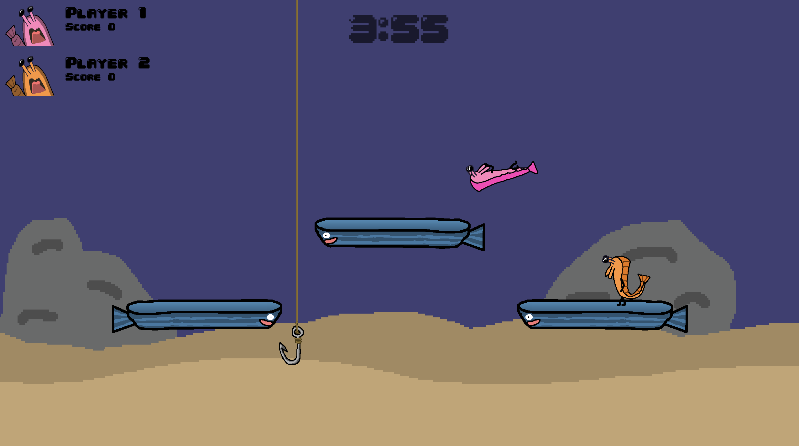
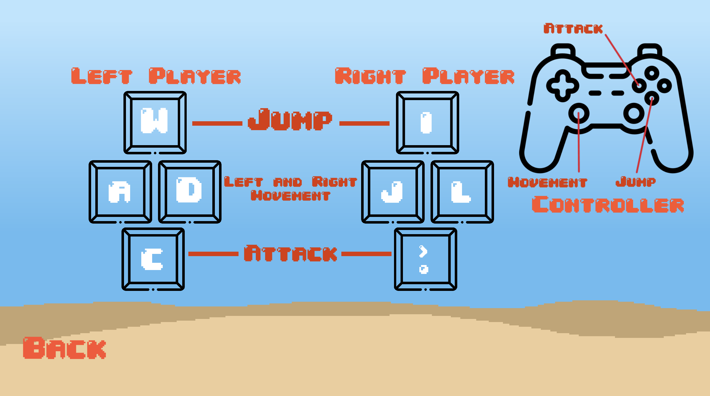

Prawn Brawl
Battle your friends across three unique maps and three action-packed game modes in this 2D local multiplayer crustacean showdown.



Development Time: 1 week Team Size: Solo Game Engine: Godot
My Involvement
- Role: Solo Developer
- Things I did:
- - Implemented Intuitive Menu Selection
- - Implemented Local Multiplayer System
- - Implemented Player Controls
- - Implemented Game State Management
- - Designed/implemented Game Art
Retrospective
- I haven't made a solo game in a while, but I still wanted to challenge myself. I decided to make a multiplayer game because I enjoyed playing games with my friends and I wanted to create a game that gave that same experience. I was able to implement the core mechanics within the first few days, and spent the rest of the time playtesting and polishing the game. I would say that I had the most fun making this game out of all the games I've made so far. At the game showcase, I played my game with my friends and also strangers which showed me how much value my game had in bringing people together and forming new relationships through a fun, engaging experience.